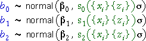

Distribution of the least squares plane
We have shown that the normal linear model implies randomness in the least squares plane,

It is however difficult to describe the distribution of something as complex as a plane.
Distribution of the individual parameter estimates
We therefore only describe the distributions of the individual parameter estimates since they have ordinary univariate distributions. Each of the three parameter estimates has a normal distribution that is centred on the corresponding population parameter.
The standard deviations of the parameter estimates depend on the x- and z-values in the data set and also on the error standard deviation, σ. We do not present their formulae fully here but only indicate that they involve a function of the {xi} and the {zi} times σ,

Note that:
The three least squares estimates are unbiased estimators of the underlying model parameters — their distributions' means equal the true population parameters.
Simulation
The diagram below again takes random samples from the normal linear model,

Click Accumulate then take several samples. Observe that all three least squares estimates vary from sample to sample and have distributions that are centred on the true underlying population parameters (30, 0.53 and -0.808).
Click Show theory to see the theoretical normal distributions of the parameter estimates. (Although we have not given complete formulae for their standard deviations, CAST can work them out.)